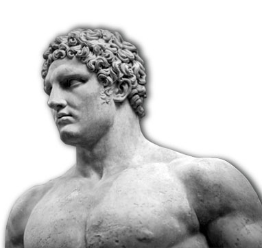
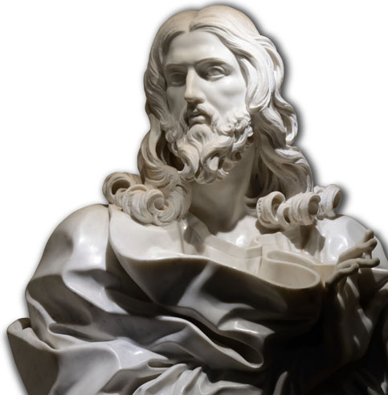

W rozwijaniu teorii sięgał do myśli M. Stirnera, K. Darwina, H. Spencera, F.A. Langego, dzieląc z nimi upodobania do nauk szczegółowych i empirycznego myślenia. Bliska mu była filozofia starożytna: teoria przyrody Heraklita z Efezu, teoria człowieka sofistów. Z relacji Platona o poglądach Kalliklesa i Trazymacha czerpał wątki do koncepcji nadczłowieka.
Rozwinął relatywistyczne teorie: poznania i wartości. Był krytykiem współczesnej mu moralności. Uporządkował na nowo systemy aksjologiczne. Inspirowany darwinizmem i filozofią A. Schopenhauera, dowodził, że poznanie ludzkie, tak jak wszystkie czynności człowieka, wypływa z potrzeb życiowych i jest im podporządkowane.
Dokonując krytyki i przewartościowania systemów aksjologicznych Nietzsche podkreślał, że każdy ma taką moralność, jaką ma naturę. A ponieważ natura jest słaba lub silna, wyróżniał moralność panów i niewolników. Pierwsi cenią: dostojność, godność osobistą, stanowczość, sprawność, pewność działania, bezwzględność w osiąganiu celów. Drugich cechuje: skłonność do litości, miękkość serca, uległość, altruizm, niepewność. Uważał, że współczesnych cechuje moralność niewolników (zwyrodnienie i dekadencja).
“Bóg jest martwy”
“Jeśli zbyt długo patrzysz w czeluść, czeluść zaczyna patrzeć na ciebie”
“Małżeństwa bywają nieszczęśliwe nie z braku miłości, ale z braku przyjaźni”
“Kiedy widzisz, że zwycięża prawda, zawsze pytaj, jakie potężne kłamstwo za nią walczyło”
Również koncepcji nadczłowieka (niem. Übermensch) Nietzsche nie zdążył wypracować w jasnej formie. Pojawia się ona jedynie w zarysie i pod postacią metafor w Zaratustrze i Woli mocy[18]. Niektóre jej interpretacje odwołują się do nauki o wiecznym powrocie i przedstawiają nadczłowieka jako istotę, która może zaakceptować wieczny powrót. Oznacza to pełną zgodę na powtarzalność całej historii własnej osoby i świata, włącznie z wszelkimi dokonanymi w niej gwałtami i mordami, ale i pełnią twórczej ekstazy. Trudno jednak wydać zgodę na gwałty, wartościując czyny z punktu widzenia powszechnie przyjmowanych zasad moralnych – aby to uczynić należałoby wpierw dokonać przewartościowania wartości w duchu nietzscheańskim.
Koncepcję tę częściowo wykorzystali naziści: oczywiście pojmując ją odpowiednio do swoich celów, nie zawsze zgodnie z pierwotną myślą Nietzschego. Doprowadziło to do stworzenia terminów „czystość rasowa” i „podczłowiek”, których sam filozof nigdy nie użył, choć w okresie hitlerowskim uznane były one za naturalną konsekwencję nietzscheańskich tez.
Gott ist tot – Bóg umarł. Zdaniem Nietzschego, człowiek współczesny przestał odczuwać obecność Boga w świecie, w odróżnieniu od ludzi żyjących w starożytności czy choćby w średniowieczu. W owych czasach czyny człowieka pociągały za sobą prędką reakcję Boga w życiu doczesnym, Boga należało się bać tu i teraz. Dziś każdy może liczyć na jego miłosierdzie – rozważa się problem, czy piekło w ogóle istnieje. Komu potrzebny jest jeszcze taki Bóg? Dlatego musiał on przenieść się w sferę abstrakcji, odejść w zapomnienie. Jest jeszcze, lecz jako martwy.
Stąd bierze się nihilizm – udawanie, że nic się nie stało, zaprzeczanie, że istnieją jakiekolwiek problemy. Nihilizm w rozumieniu Nietzschego to akceptacja pozorów, uznanie za wartość tego, co jest już bez-wartością. Łatwe i wygodne życie, przyjemne i pozbawione napięcia. Tak rozumiany nihilizm jest wrogi życiu, bo domaga się wpasowania w obowiązujący system norm oparty na moralności niewolniczej.
W jego twórczości można wyróżnić trzy zasadnicze okresy. Pierwszy nazywany jest kultem sztuki. Wtedy to był on pod wielkim wpływem muzyki Wagnera. Napisał wówczas Narodziny tragedii (Die Gebert der Tragoedie) z 1869 roku oraz Niewczesne rozważania (Unzeitgemaesse Betrachtungen) w 1872 roku. Drugi okres nazywany jest dziś kultem nauki. Największy wpływ na filozofia miała wówczas teoria Darwina. Napisał on wtedy Ludzkie, arcyludzkie (Menschliches, Allzumenschliches) w 1878 roku, Jutrzenka (Morgenroethe) w 1881 roku i Wiedza radosna (Froehliche Wissenschaft) w 1882 roku. Trzeci okres to kult życia, siły i indywidualności. Z tego okresu pochodzą dzieła: Tako rzecze Zaratustra (Also sprach Zarathustra) w 1884 roku, Poza dobrem i złem (Jenseits von Gut und Boese) w 1886 roku oraz Z genealogii moralności (Zur Genealogie der Moral) w 1887 roku. Już po śmierci filozofa ukazało się jeszcze jedno jego dzieło – Ecce homo w 1908 roku.
CENA 19.99 PLN